Android Development (Native Kotlin)
GoalScope: Football Stats & Live Center
Kotlin
API-Football (v3)
MVVM
Real-time Polling
Data Caching
Галерея інтерфейсу
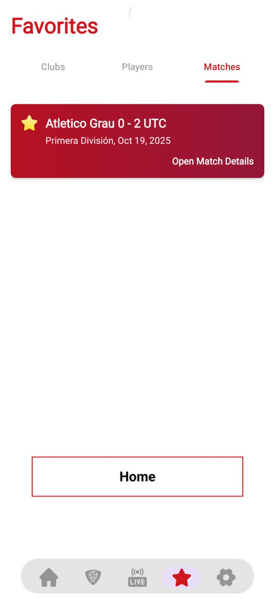
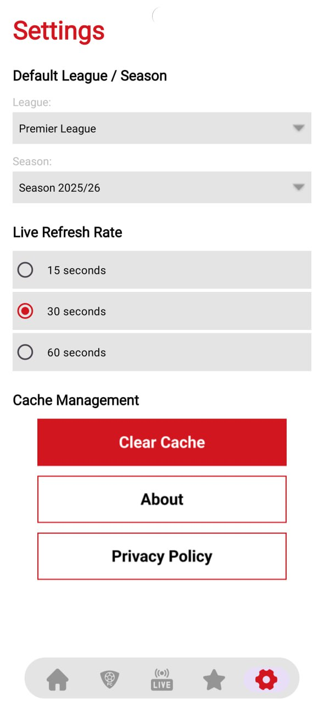
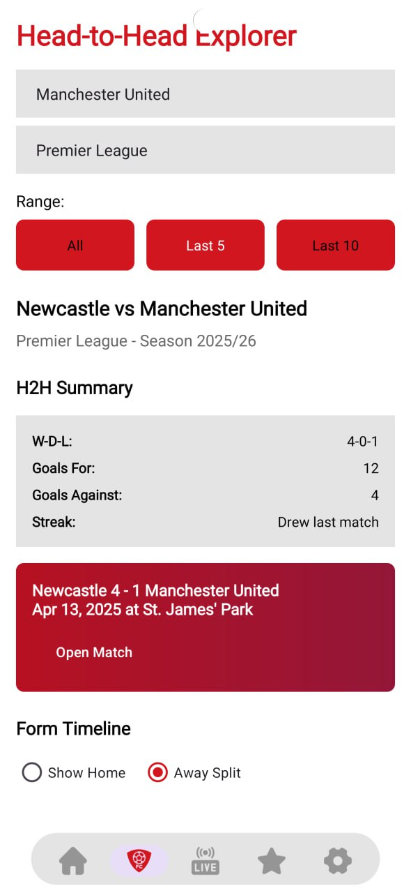
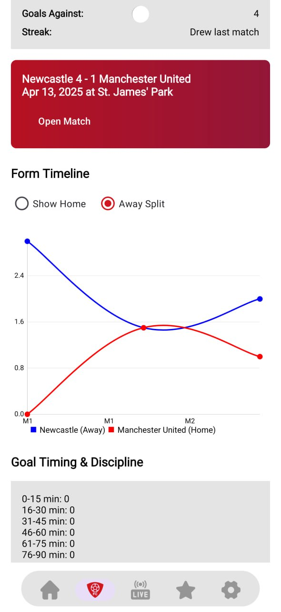
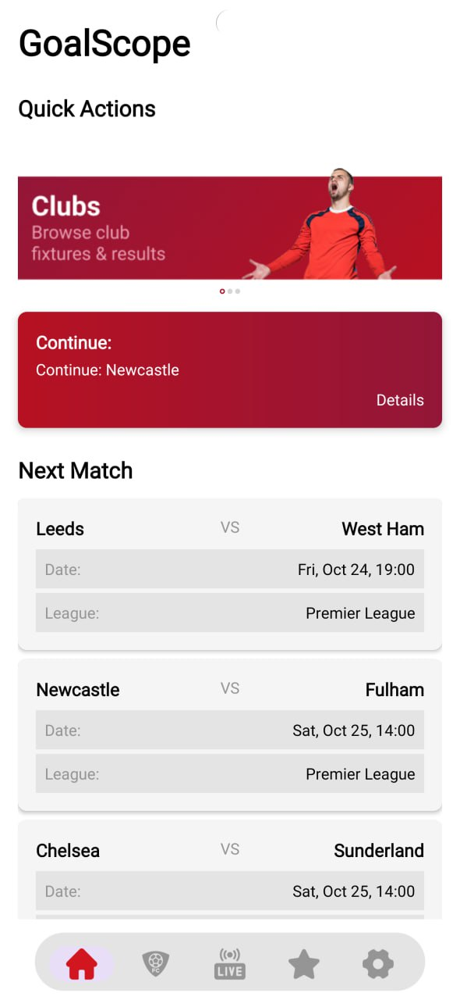
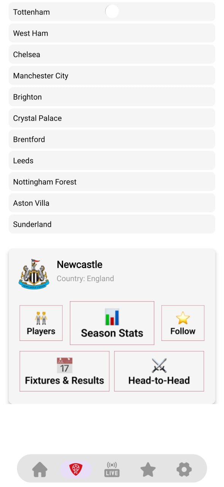
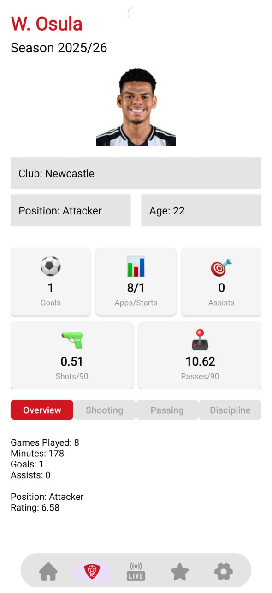
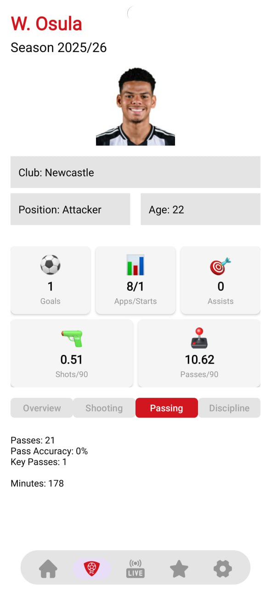
 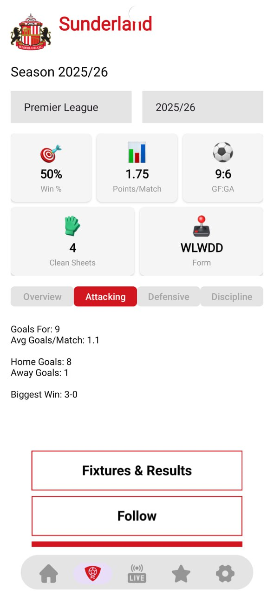
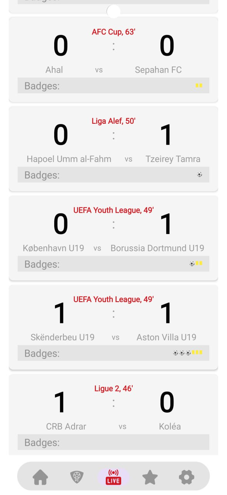
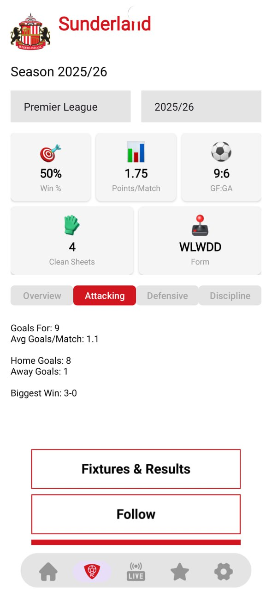
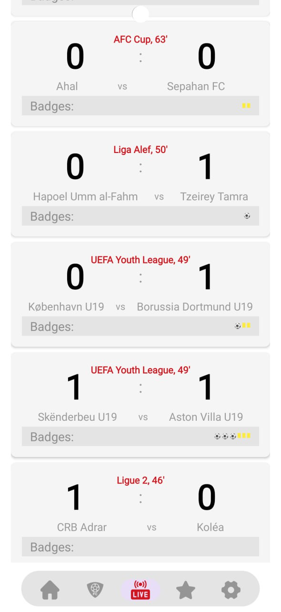
 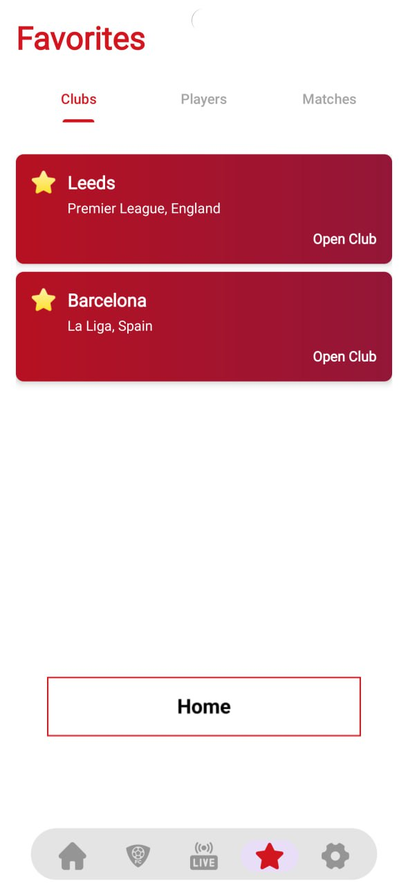
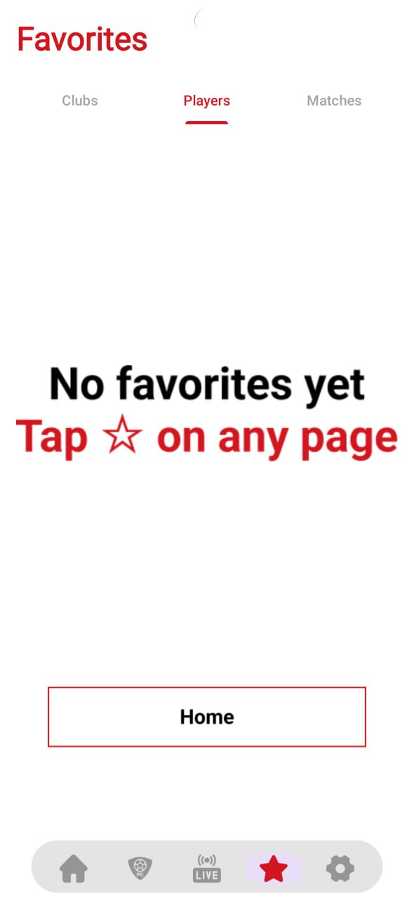
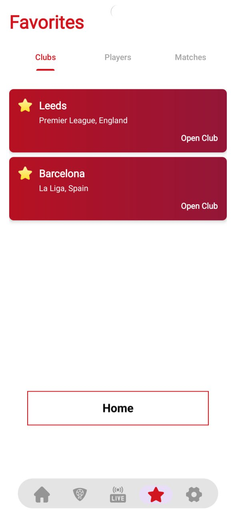
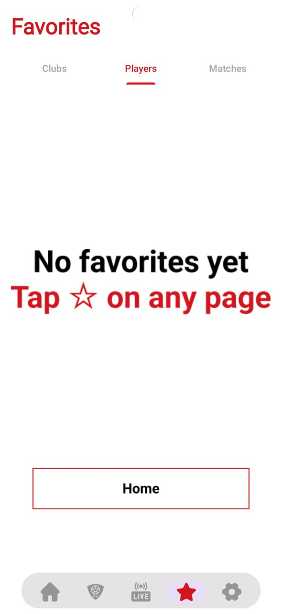
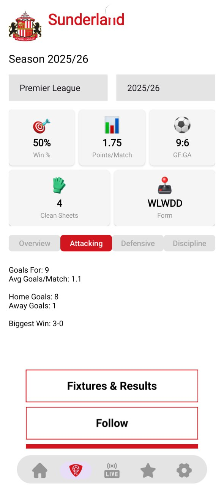
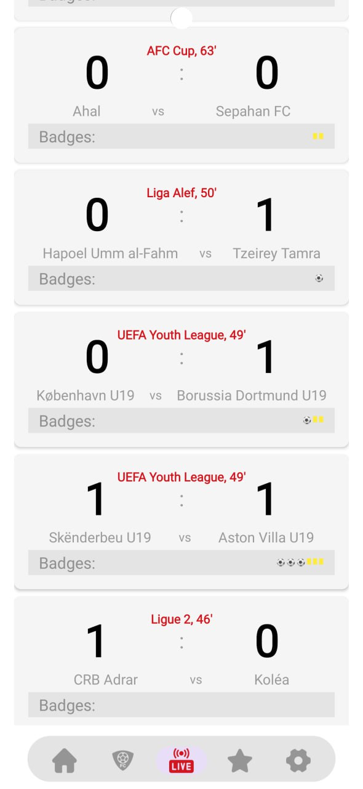
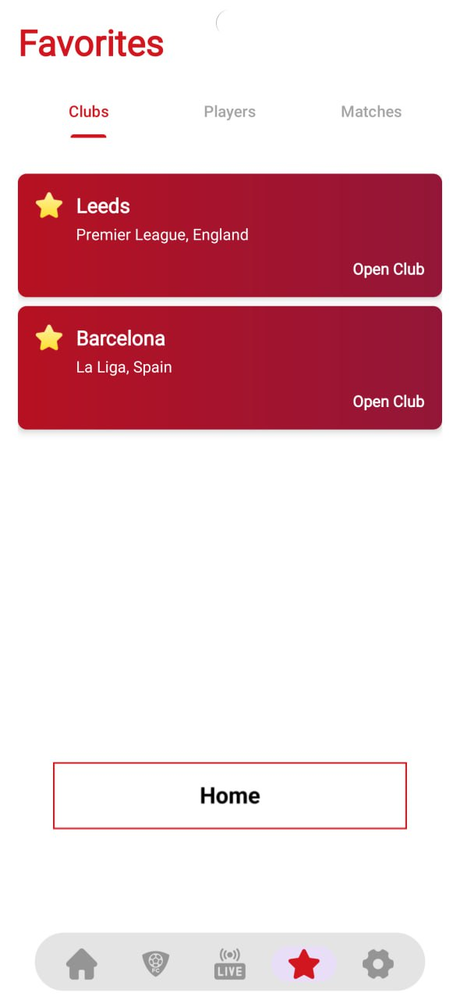
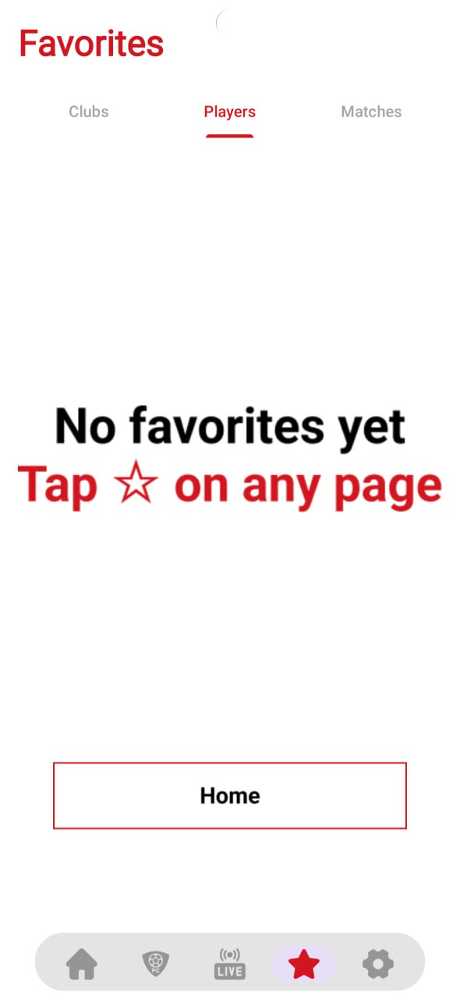
Огляд проєкту
GoalScope — це нативний Android-застосунок для футбольної аналітики, що працює з масштабним API-Football. Проєкт фокусується на наданні користувачу глибокої статистики команд та гравців у реальному часі.
🔴 Live Match Center
Реалізація механізму polling (15-60 сек) для автоматичного оновлення подій матчу, статистики та таймлайну без перезавантаження екрану.
📊 Head-to-Head Explorer
Складний аналітичний модуль для порівняння двох клубів: історія зустрічей, форма, розподіл голів та дисциплінарні показники.
💾 Data Persistence
Система кешування API-відповідей та локальне збереження "Favorites" для миттєвого доступу до улюблених клубів та гравців.
Технічна реалізація
- Архітектура: MVVM з використанням Coroutines для асинхронних запитів.
- UI: Складна багаторівнева навігація (Bottom Nav + Tabs), кастомні адаптери для відображення статистичних KPI.
- Валідація: Опрацювання складних станів мережі, помилок API та порожніх станів (Empty States).
Висновок
Цей проєкт демонструє навички роботи з великими обсягами REST-даних, побудову відмовостійкої архітектури та створення UX для data-heavy продуктів у спортивній ніші.